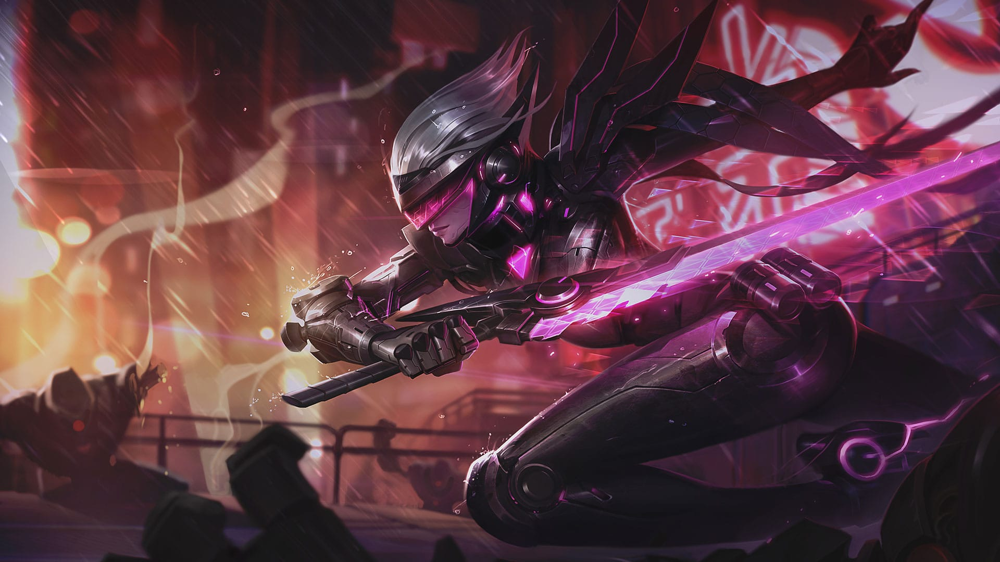
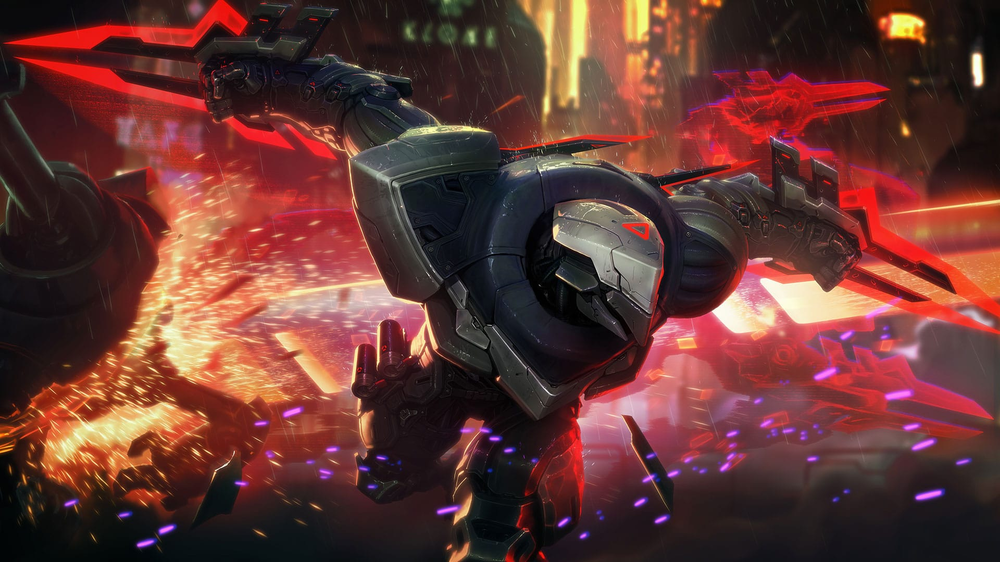

PROJET Ashe
Chef de guerre sublimé de la tribu des Avarosans, Ashe est à la tête de la plus vaste horde des terres du nord. Stoïque, intelligente et idéaliste, mais mal à l'aise dans son rôle de leader, elle puise dans la magie ancestrale de sa lignée pour manier un arc de glace pure.

PROJET Yi
Maître Yi a renforcé son corps et affûté son esprit jusqu'à ce que réflexion et action ne fassent plus qu'un. Bien qu'il ne fasse appel à la violence qu'en dernier recours, la grâce et la vitesse avec lesquelles il manie son épée assurent une résolution rapide de tout conflit.

PROJET Fiora
Fiora est la duelliste la plus redoutée de Valoran : elle est connue pour ses manières brusques et sa vivacité d'esprit autant que pour la rapidité de sa rapière d'acier bleu.
PROJET Katarina
Aussi prompte dans ses décisions qu'elle est meurtrière en combat, Katarina figure parmi les assassins les plus prestigieux de Noxus. Fille aînée du légendaire général Du Couteau, elle révéla bien vite ses talents en éliminant ses ennemis avec la plus grande des discrétions.

PROJET Zed
L'impitoyable Zed est le maître de l'Ordre de l'ombre, une organisation qu'il a créée dans l'intention de militariser la tradition des arts martiaux d'Ionia et de chasser enfin les envahisseurs noxiens.